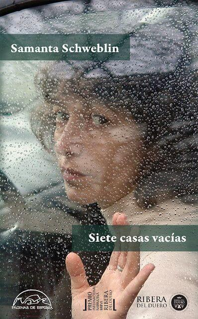

Playlist - Nada de Todo Esto
-
Está canción genera una calma e inquietud y a mí parecer quedaría muy bien en la escena donde están conduciendo al inicio de la historia.
-
Esta canción se relaciona con el libro en que genera una sensacion de inquietud y vacío, que sirve para acompañar las escenas de dialogo entre los personajes.
-
Esta cancion la elegí porque es una melodia sutil, que transmite esa sensacion de algo bizarro e incomprendible que ocurre detraas de los sucesos que ocurren en el cuento.
-
Esta canción se relaciona con el cuento porque inicia tranquila, pero, gradualmente se va volviendo mas fuerte, como sucede con la sensacion de inquietud a medida que avanza el cuento.
-
Esta canción se relaciona con el cuento, ya que la letra habla del deseo de cercanía y conexíon con las personas, y la imposibilidad de tenerla, igual que la relacion y los deseos de la madre y la hija.
-
Esta canción se relaciona con el cuento porque transmite una sensacion de instrospeccion y melancolía, y sirve para mostrar escenas donde hay tension entre la madre y la hija.